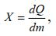
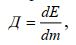

План
1. Ионизирующие излучения, их действие на организм человека и гигиеническое нормирование.
2. Защита от воздействия ионизирующих излучений.
3. Поглощенная энергия излучения. Коэффициент качества излучения. Эквивалентная доза облучения.
4. Биологические изменения в организме от ионизирующего излучения.
6. Три способа защиты от внешнего облучения. Разделение работ с открытыми источниками излучения на классы.
Ионизирующее излучение –это излучение, вызывающее ионизацию среды (образование заряженных атомов или молекул-ионов). Ионизирующими свойствами обладают космические лучи и радиоактивные вещества на Земле. Искусственными источниками ионизирующих излучений являются ядерные реакторы, ускорители заряженных частиц, искусственные радиоактивные изотопы, рентгеновские лучи.
Источники ионизирующих излучений применяются: для дефектоскопии металлов, в геологоразведке, медицине, атомной энергетике и др.
Ионизирующее излучение бывает электромагнитным – -излучение, рентеновские лучи (фотонным) и корпускулярным (поток частиц, масса которых отлична от нуля: - -частицы, протоны, нейтроны и др.).
Количественно действие -излучения и рентгеновского излучения в сухом воздухе оценивают поэкспозиционной дозе.Экспозиционная доза Х представляет собой отношение полного заряда ионов одного знака, возникающих в малом объеме воздуха, к массе воздуха в этом объеме:dQ
где Q – полный заряд ионов одного знака; m – масса воздуха.
За единицу экспозиционной дозы принимают Кл/кг. Применяется также внесистемная единица – рентген; 1Р=2,58·10-4Кл/кг.
Биологическое действие ионизирующего излучения на организм зависит от поглощенной энергии излучения.
Поглощенная энергия излученияД–это физическая величина, равнаяотношению средней энергии, переданной излучением веществу в некотором элементарном объеме, к массе вещества в этом объеме:dE
где Е – энергия;m– масса вещества.
Единицей поглощенной дозы является грей (Гр); 1 Гр. = 1 Дж/кг.
Применяется также прежняя единица рад. 1 Гр. = 100 рад.
Установлено, что действие ионизирующего излучения на организм зависит не только от поглощенной дозы, но зависит и от пространственного распределения поглощенной энергии, характеризуемого линейной передачей энергии (ЛПЭ) заряженных частиц в среде.
Для сравнения биологического действия различных видов излучения используют понятие коэффициент качества, связанный с ЛПЭ.
Коэффициент качества излученияQ – это безразмерная величина, характеризующая зависимость неблагоприятных биологических последствий облучения человека в малых дозах от полной ЛПЭ излучения.
Для оценки радиационной опасности хронического действия излучения произвольного состава введено понятиеэквивалентной дозы облучения Н,которая определяется как произведение поглощенной дозы на средний коэффициент качества излучения в данной точке ткани: H = Д·Q.
В качестве единицы измерения эквивалентной дозы принят зиверт (Зв);
1 Зв = 1 Дж/кг. Применяется также единица бэр (биологический эквивалент рада); 1 бэр = 0,01 Зв. Зиверт равен эквивалентной дозе излучения, при которой поглощенная доза равна 1 Гр и коэффициент качества излучения равен единице.
Поглощенная, экспозиционная и эквивалентная дозы, отнесенные к единице времени, носят название мощности соответствующих доз.
По современным представлениям основной механизм действия ионизирующих излучений связан с процессами ионизации атомов и молекул живой материи, в частности молекул воды, содержащихся в органах и тканях. При этом нарушается нормальное течение биохимических процессов и обмен веществ в организме. Изменения в организме могут быть обратимыми и необратимыми. При небольшой дозе пораженная ткань восстанавливает свою функциональную деятельность. Доза, превышающая ПДК, может вызвать необратимое поражение отдельных органов или всего организма и проявиться в хронической форме лучевой болезни. Отдаленными последствиями лучевого поражения могут быть лучевые катаракты, злокачественные опухоли и т.п.
Любой вид ионизирующих излучений вызывает биологические изменения в организме как при внешнем (источник находится вне организма), так и при внутреннем облучении (радиоактивные вещества попадают внутрь организма, например, через рот или органы дыхания).
При однократном облучении всего тела человека возможны следующие биологические нарушения в зависимости от суммарной поглощенной дозы излучения:
до 0,25 Гр – видимых нарушений нет;
0,25…0,50 Гр – возможны изменения в крови;
0,5…1 Гр – изменения в крови, нормальное состояние трудоспособности нарушается;
1,0…2,0 Гр – нарушение нормального состояния, возможна потеря трудоспособности;
2,0…4,0 Гр – потеря трудоспособности, возможен смертельный исход;
4,0…5,0 Гр – смертельные случаи составляют 50% от общего числа пострадавших;
6,0 Гр и более – смертельные случаи достигают 100 % общего числа пострадавших.
При облучении дозами в 100 – 1000 раз превышающих смертельную дозу, человек может погибнуть во время облучения («смерть под лучом»).
Чувствительность различных тканей и органов человека к действию облучения неодинакова. Поэтому введено понятие «критический орган». Критический орган – это орган, ткань, часть тела или все тело, облучение которого в данных условиях причиняет наибольший ущерб здоровью. В зависимости от радиочувствительности они объединены в три группы:
I группа – все тело, гонады, красный костный мозг;
II группа – мышцы, щитовидная железа, жировая ткань, печень, почки, селезенка, желудочно-кишечный тракт, легкие, хрусталик глаза и другие органы, за исключением относящихся к I и III группам;
III группа – кожный покров, костная ткань, кисти, предплечья, лодыжки и стопы.
Конкретные значения физических параметров, принятых в качестве нормы, даны в НРБ-99. Принципы радиационной безопасности: непревышение установленного основного дозового предела; исключение всякого облучения; снижение дозы облучения до возможно низкого уровня.
Согласно НРБ-99 установлены следующие категории облучаемых лиц:
А –персонал,т.е. лица, работающие с источниками ионизирующих излучений;
Б –ограниченная часть населения,т.е лица, непосредственно не занятые на работе с ИИИ, но по условиям проживания или размещения рабочих мест могущие подвергаться воздействию ИИ, применяемых в учреждениях И (или) удаляемых во внешнюю среду с отходами; В –все население.
Установлены три класса нормативов: основные дозовые уровни; допустимые уровни; рабочие контрольные уровни.
В качестве основных дозовых пределов в зависимости от группы критических органов для категории А устанавливается ПДД за год, а для категории Б – пределы дозы за год (ПД):
Таблица 3 – Основные дозовые пределы в зависимости от группы критических органов
Группа органов | критических | ПДД для категории А за год, Зв | Пределы дозы для категории Б за год, Зв |
I | 0,05 | 0,005 | |
II | 0,15 | 0,015 | |
III | 0,30 | 0,03 |
Предельно допустимой дозойсчитается такой годовой уровень облучения персонала, который не вызывает при равномерном накапливании дозы в течение 50 лет обнаруживаемых современными методами неблагоприятных изменений в состоянии здоровья самого облучаемого и его потомства.
Основные санитарные правила (ОСП – 72/80)устанавливают требования и нормы работы с радиоактивными веществами, применительно к определенным видам работ. Они регламентируют размещение установок, организацию работ, порядок получения, учета, хранения и перевозки ИИ. А также правила работы с закрытыми ИИ и с радиоактивными веществами в открытом виде; устройство вентиляции, пылегазоочистки, отопления, водоснабжения и канализации; требования к сбору, удалению, обезвреживанию радиоактивных отходов, дезактивации помещений и оборудования; меры индивидуальной защиты и личной гигиены, вопросы радиационного контроля.
Защита от внешнего облучения:
1)Защита расстоянием.
2)Защита временем.
3)Защита экранами.
Закрытыми называются ИИИ, устройство которых исключает попадание радиоактивных веществ в ОС. На атомных электростанциях работой реактора управляют дистанционно, разработана система защитных оболочек, применяются манипуляторы, смотровые системы и т.п.
Защита от внутреннего облучения исключает контакт с радиоактивными веществами.
Под внутренним облучением понимают воздействие на организм ИИ радиоактивных веществ, находящихся внутри организма.
В зависимости от удельной активности (радиационной опасности) радиоактивные вещества в открытом виде делятся на 4 группы – А, Б, В, Г (в убывающей последовательности).
Радиационная опасность радиоактивного вещества характеризуется минимально значимой активностью – наибольшей активностью на рабочем месте, не требующей регистрации или разрешения Госнадзора.
Единицей активности является одно ядерное превращение в секунду.
Называется эта единица – беккерель (Бк). Используется также старая единица – кюри (Ku). 1 Ku = 3,7·1010Бк.
Под удельной активностью понимают активность, отнесенную к единице массы или объема, например Ku/г, Ku/л.
Все работы с открытыми источниками подразделяются на три класса.
Таблица 4 – Класс работ и активность на рабочем месте
Группа радиационной опасности | Минимально значимая актив- ность (МЗА), мкKu | Активность на рабочем месте, мкKu | ||
|
| Класс работ | ||
|
| I | II | III |
А | 0,1 | 104 | 10…104 | 0,1…10 |
Б | 1,0 | 105 | 100…102 | 1…100 |
В | 10,0 | 106 | 1000…106 | 10…103 |
Г | 100,0 | 107 | 10 000…107 | 100…104 |
Класс работы определяет требования к устройству и размещению помещений, где работают с ИИИ. На дверях должен быть знак радиационной опасности (треугольник по ГОСТ 17925-72) и указан класс работы.
Работы III класса могут проводиться в обычных лабораториях с вытяжными шкафами. Работы I класса должны проводиться в отдельном здании или изолированной части зданий с отдельным входом через санпропускник и разделяться на три зоны. В первой зоне размещают камеры, боксы, оборудование, коммуникации, являющиеся основными источниками радиоактивного загрязнения. Во II зоне размещают объекты и помещения, требующие периодического обслуживания. Люди должны находиться постоянно в III зоне.
Применяют СИЗ в зависимости от класса работ. При работе I класса и отдельных работах II класса СИЗ состоят из комбинезона или костюма, спецбелья, носков, спецобуви, перчаток, бумажных полотенец и носовых платков разового пользования, очков, щитков, ручных захватов, а также средств защиты органов дыхания. При авариях применяют пневмокостюмы.
Необходимо выполнять специальные правила хранения, использования и дезактивации СИЗ.
Строгий радиационный контроль обязателен для лиц, условия труда которых таковы, что доза облучения может превышать 0,3 годовой ПДД.
Результаты всех видов радиационного контроля должны регистрироваться и храниться в течение 30 лет. При индивидуальном контроле ведут учет годовой дозы облучения, а также суммарной дозы за весь период работы.
В основу работы дозиметрических приборов положены следующие методы: ионизационный метод, основанный на способности излучений ионизировать воздух; фотографический метод, основанный на способности фотографической эмульсии чернеть при воздействии ионизирующего излучения; сцинтилляционный метод, основанный на способности некоторых кристаллов, газов или растворов испускать вспышки видимого света при поглощении энергии ионизирующих излучений.
1. Источники ионизирующего излучения.
2. Три группы критических органов.
3. Поглощенная, экспозиционная и эквивалентная дозы излучения.
4. Основные виды защиты от внешнего излучения.
5. На какие группы по удельной активности делятся радиоактивные вещества?.